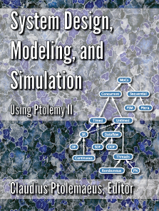

Claudius Ptolemaeus, Editor System Design, Modeling, and Simulation, Ptolemy.org, Download Draft Version 0.11, 2013.
The book is intended for use by engineers and scientists who need to model a wide variety of systems or who want to understand how to model complex, heterogeneous systems. Such systems include, for example, mechanical systems, electrical systems, control systems, biological systems, and - most interestingly - heterogeneous systems that combine elements from these (and other) domains. The book assumes a familiarity with simulation and modeling tools and techniques, but does not require in-depth background in the subject matter.
The book emphasizes modeling techniques that have been realized in Ptolemy II. Ptolemy II is a simulation and modeling tool intended for experimenting with system design techniques, particularly those that involve combinations of different types of models. It was developed by researchers at UC Berkeley, and over the last two decades it has evolved into a complex and sophisticated tool used by researchers around the world. This book uses Ptolemy II as the basis for a broad discussion of system design, modeling, and simulation techniques for hierarchical, heterogeneous systems. But it also uses Ptolemy II to ensure that the discussions are not abstract and theoretical. All of the techniques are backed by a well designed and well tested software realization. More detailed descriptions of Ptolemy's underlying software architecture and the finer points of its operation are found in sidebars, appendices, and links.

System Design, Modeling, and Simulation by The Ptolemy Project, University of California, Berkeley is licensed under a Creative Commons Attribution-ShareAlike 3.0 Unported License.
Permissions beyond the scope of this license may be available at http://ptolemy.org/~eal.